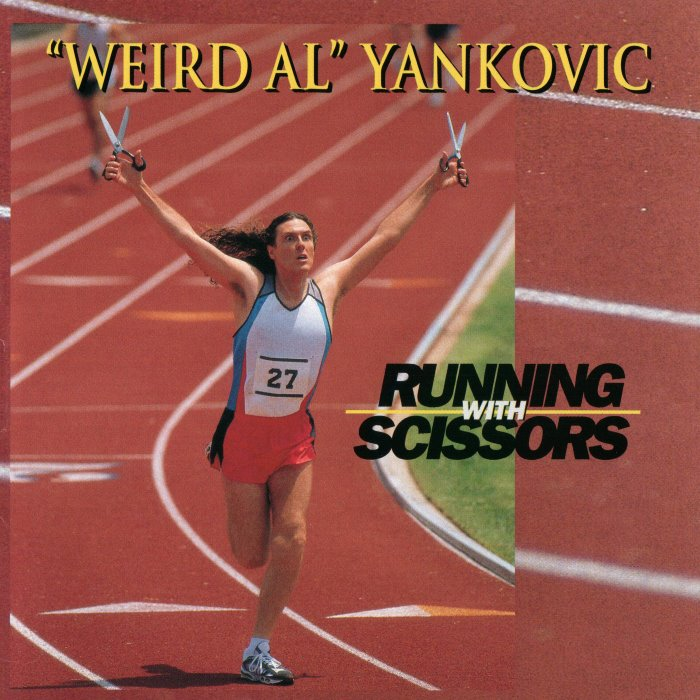
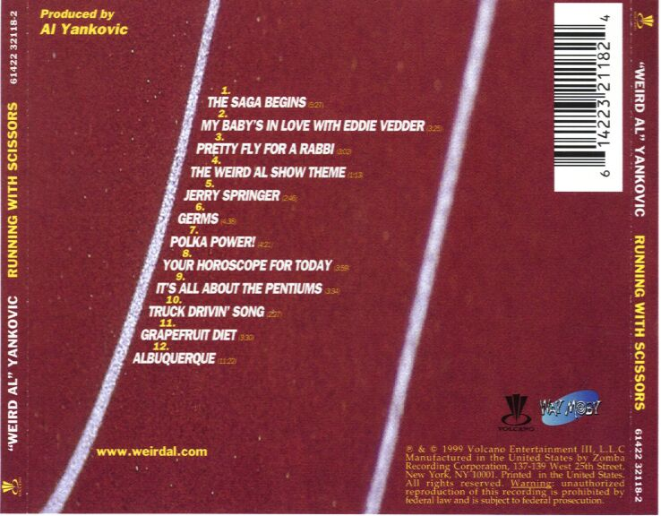
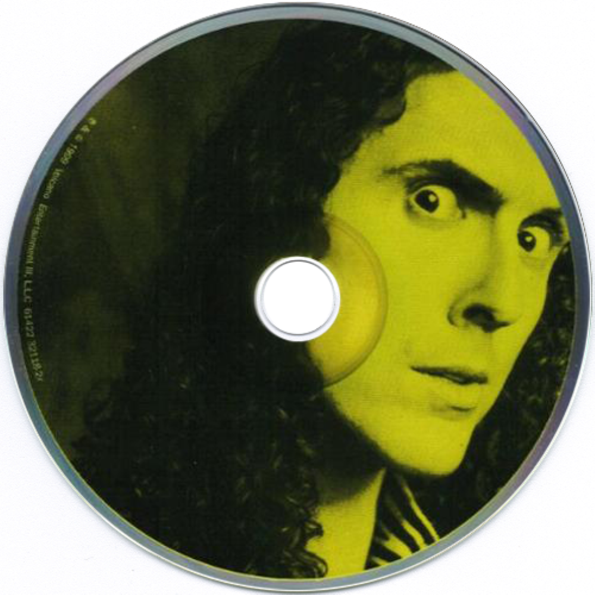

Running with Scissors é o décimo álbum de estúdio do músico americano de paródias "Weird Al" Yankovic, lançado em 29 de junho de 1999. Foi o quarto álbum de estúdio produzido pelo próprio Yankovic e seu primeiro álbum pela Volcano Records, após a gravadora adquirir a Scotti Brothers. Também foi o primeiro disco a apresentar seu visual sem barba e com cabelos mais longos. Os estilos musicais do álbum são construídos em torno de paródias e pastiches da música pop e do rock do final dos anos 1990, tendo como principais alvos o rock alternativo e o hip-hop. O primeiro single do álbum, "The Saga Begins", porém, foi uma paródia do single "American Pie", de 1971, de Don McLean. A música conta a história do filme Star Wars: Episódio I – A Ameaça Fantasma, lançado aproximadamente na mesma época. Nenhum dos singles do álbum entrou nas paradas musicais dos Estados Unidos, embora "Pretty Fly for a Rabbi", uma paródia de "Pretty Fly (For a White Guy)", da banda The Offspring, tenha alcançado a 67ª posição na Austrália.
O álbum apresenta cinco paródias. Além das já mencionadas "The Saga Begins" e "Pretty Fly for a Rabbi", o álbum também contém paródias de "One Week", da banda Barenaked Ladies, "It's All About the Benjamins", de Puff Daddy, e "Zoot Suit Riot", da banda Cherry Poppin' Daddies. A outra metade do álbum é composta por material original, apresentando diversas "paródias de estilo", ou seja, imitações musicais de artistas existentes. Essas paródias de estilo incluem imitações de artistas específicos, como Nine Inch Nails e The Rugburns, além de imitações de diferentes gêneros musicais, como zydeco, ska de terceira onda e country sobre caminhoneiros.
Running with Scissors recebeu críticas em sua maioria positivas, com os críticos elogiando "The Saga Begins"; no entanto, alguns consideraram que o álbum foi produzido às pressas. O álbum alcançou a 16ª posição na Billboard 200. "The Saga Begins" tornou-se um dos singles mais conhecidos de Yankovic, embora nunca tenha entrado na Billboard Hot 100. Running with Scissors foi o sétimo disco de ouro de Yankovic nos Estados Unidos e recebeu certificação de platina por ter vendido mais de um milhão de cópias no país. O álbum também recebeu certificação de ouro na Austrália e no Canadá.
Running with Scissors foi lançado em 29 de junho de 1999. O álbum entrou na parada Billboard 200 na 35ª posição em 17 de julho e subiu para sua posição máxima, a 16ª, na semana seguinte. O álbum também apareceu na parada Top Internet Albums, sendo a primeira vez que Yankovic figurou nessa parada. Ele estreou na 7ª posição e posteriormente alcançou a 3ª posição. O álbum recebeu consecutivamente as certificações de Ouro e Platina da Recording Industry Association of America (RIAA) por remessas superiores a 1.000.000 de cópias nos Estados Unidos. Até 2014, as vendas nos Estados Unidos haviam ultrapassado 1.182.000 cópias, de acordo com a Nielsen SoundScan.
No final de 2013, Yankovic processou sua gravadora, Volcano, e sua empresa controladora, Sony, por royalties de publicação não pagos referentes a vários de seus álbuns e singles, incluindo Running with Scissors. Yankovic alegou que, apesar do sucesso do álbum, nunca havia recebido royalties pelo disco. O processo inicialmente foi de 5 milhões de dólares; Yankovic venceu a ação e recebeu uma quantia em dinheiro não divulgada da Sony.


